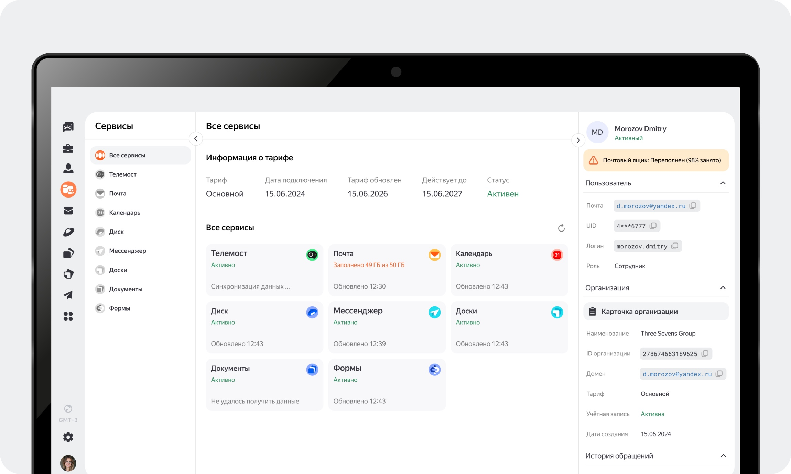
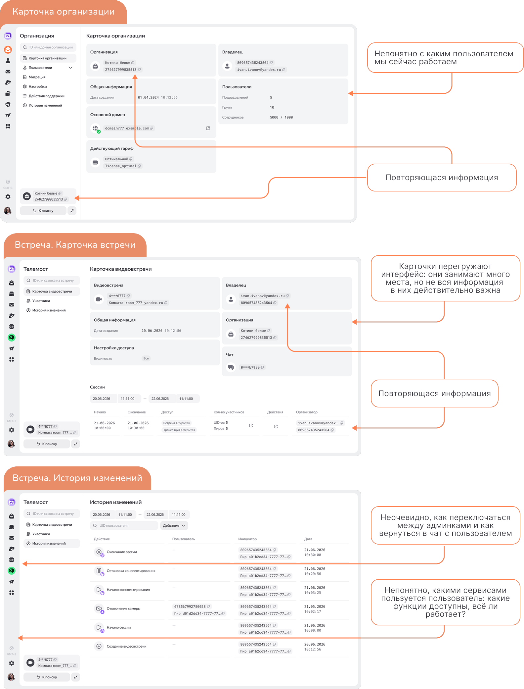
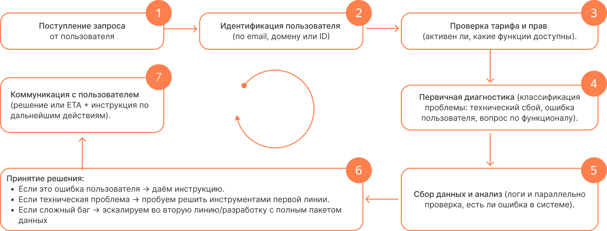
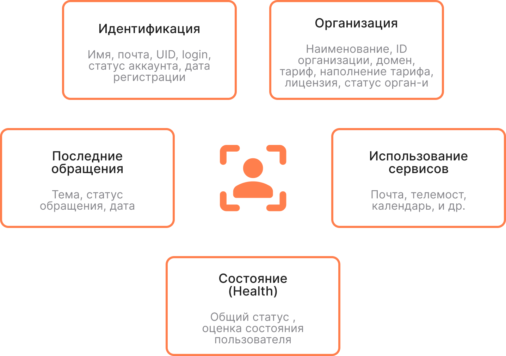
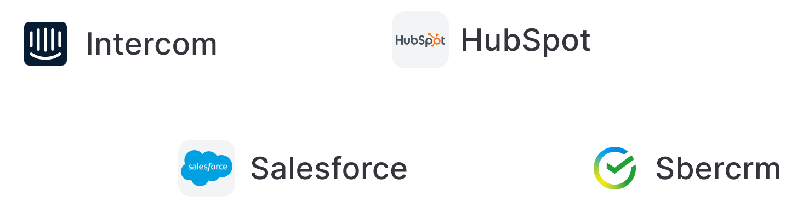
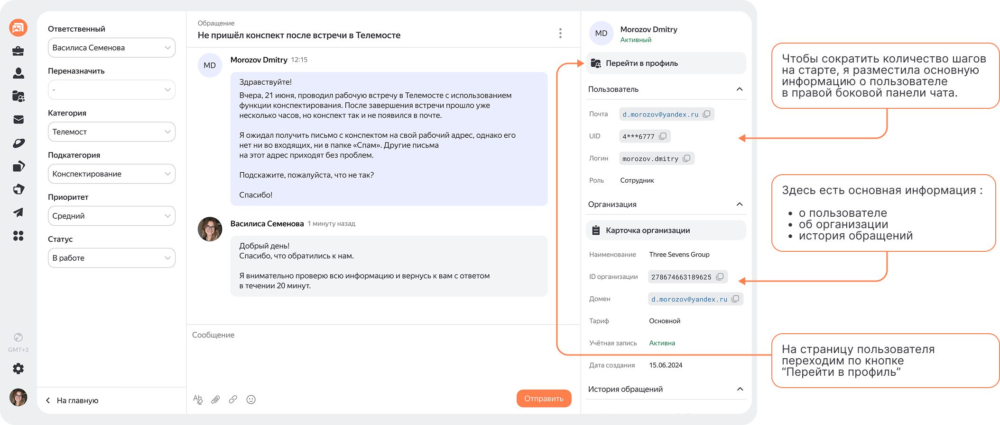
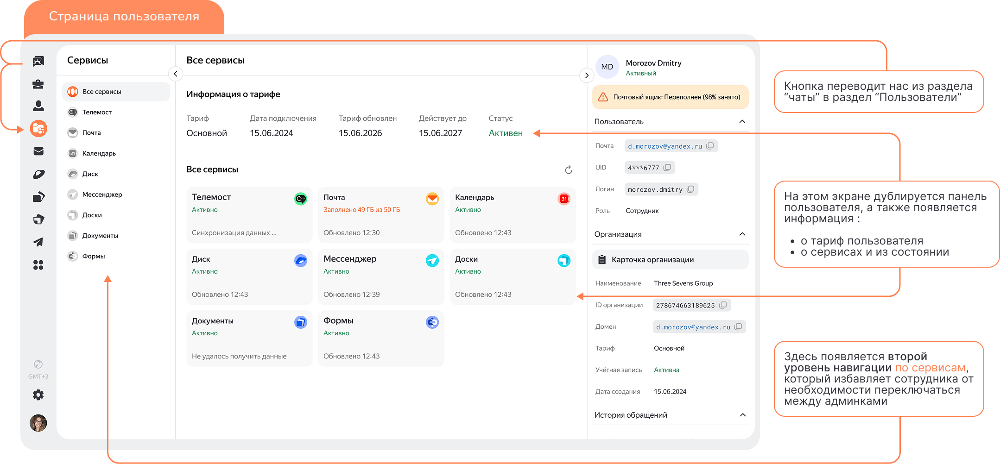
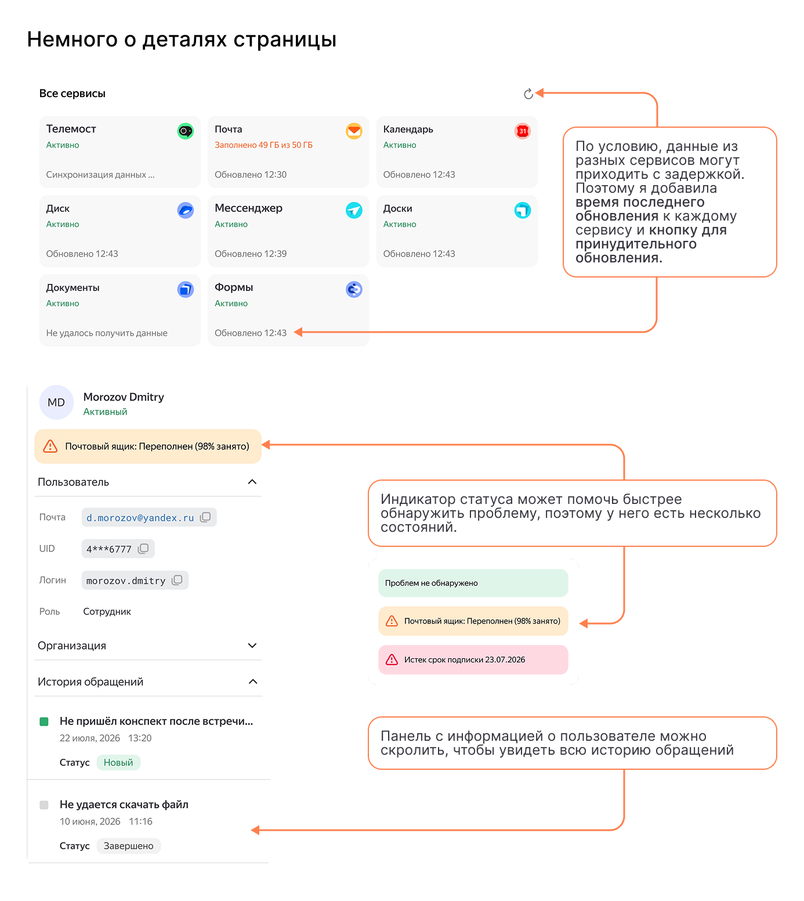
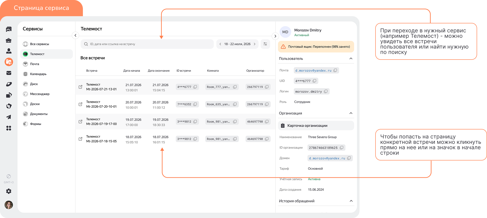
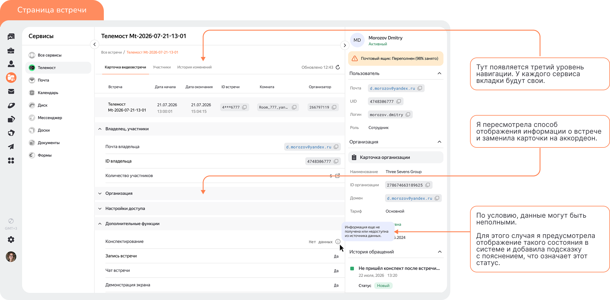

Единая страница поддержки Unified support view
- КлиентClient
- Яндекс 360
- ФорматFormat
- Концепт-проектConcept project
- РольRole
- UX-исследование, дизайнUX research, design
- ГодYear
- 2026

Саппорт живёт в нескольких админках сразуSupport lives in several admin panels at once
Сотрудникам поддержки часто приходится использовать несколько админок одновременно, чтобы разобраться с одним обращением. Это усложняет работу и увеличивает время обработки. Support agents often need several admin panels open at once just to handle a single request. That slows everything down.
ЦельGoal
Спроектировать единую страницу, которая помогает быстро получить информацию о пользователе, его сервисах и истории обращений.Design a single page that surfaces a user's info, services, and ticket history at a glance.
Метрика 1Metric 1
Сокращение количества переходов между админками.Fewer switches between admin panels.
Метрика 2Metric 2
Уменьшение времени обработки одного обращения.Less time spent resolving a single ticket.
Декомпозиция задачиBreaking the task down
1. Изучить флоу со стороны саппорта1. Study the flow from the support side
- UX-аудит текущего интерфейсаUX audit of the current interface
- Предположительный флоу сотрудника поддержкиThe agent's likely workflow
2. Изучить флоу со стороны пользователя, research2. Study the flow from the user side, research
- Какие сервисы доступны юзеру, с какими вопросами могут обращатьсяWhat services are available to the user, what they might reach out about
- Портрет пользователя — что важно видеть о нём в первую очередьUser persona — what matters most to see about them first
3. Бенчмаркинг3. Benchmarking
- Как похожие сервисы организуют интерфейсы с большим количеством информацииHow similar services organise interfaces dense with information
4. Приоритизация гипотез4. Hypotheses prioritisation
- Какие гипотезы удалось сформулировать на предыдущих этапахWhich hypotheses came out of the previous steps
- Распределение по важности — метод ICEPrioritising them — the ICE method
UX-аудит текущего интерфейсаUX audit of the current interface
Разобрала действующие админки саппорта по карточкам — организации, встречи и истории изменений, — чтобы зафиксировать, где именно сотрудник теряет время. I went through the support team's current admin panels — organisation, meeting and change-history cards — to pin down exactly where an agent loses time.

Итоги UX-аудита: UX audit takeaways:
- Неочевидна навигация между админками и обратно в чат Navigation between admin panels and back to the chat isn't obvious
- Нет единого источника данных о пользователе, его сервисах или ошибке No single source of data about the user, their services, or the issue
- Информация не структурирована по важности, есть дубли Information isn't prioritised, and there's duplication
Предположительный флоу сотрудника поддержкиThe support agent's likely workflow
На этом этапе я предположила, из каких этапов состоит процесс работы с запросом пользователя и что важно для его быстрого решения. At this stage I mapped out what steps the process of working through a user request likely consists of, and what matters for resolving it quickly.

Инсайты после проработки флоу: Insights after mapping out the flow:
В действующем интерфейсе негде посмотреть информацию о сервисах, которыми пользуется пользователь, и их состоянииThe current interface has nowhere to see which services a user has, or their status
Сейчас действительно требуется большое количество шагов, чтобы разобраться в проблемеIt genuinely takes a lot of steps today just to understand the problem
Гипотезы после UX-аудита: Hypotheses after the UX audit:
- Если сократить переходы между админками, обработка обращений ускоритсяFewer switches between admin panels means faster ticket handling
- Если собрать данные из разных сервисов в одной панели, сотруднику не придётся переключаться между ними, что упростит работу саппортаGathering data from every service into one panel removes the need to switch between them, simplifying support work
- Если показывать информацию о тарифе и сервисах, это позволит сотруднику быстрее выявлять проблему пользователяShowing plan and service info up front helps the agent spot the user's problem faster
Изучение флоу со стороны пользователя, researchUser-side research
Дальше изучила, какие сервисы Яндекс 360 предлагает своим пользователям и с какими вопросами они могут обращаться в поддержку — это помогло понять, какие данные о пользователе нужны сотруднику в первую очередь. Next I looked at what services Yandex 360 offers its users and what they're likely to contact support about — this helped me understand which user data an agent actually needs first.
Что я выяснила What I found out
Два типа пользователейTwo kinds of users
Яндекс 360 — сервис, доступный и для обычных пользователей, и для корпоративных клиентовYandex 360 serves both individual users and corporate clients
Разный характер вопросовRequests vary widely
Пользователи могут обращаться с разными вопросами: от доступа и настроек до тарифов и технических ошибокUsers reach out about anything from access and settings to billing and technical errors
Широкий спектр сервисовA wide range of services
Телемост, Почта, Календарь, Диск, Мессенджер, Доски и другие — их наличие и работа зависят от тарифаTelemost, Mail, Calendar, Disk, Messenger, Boards and more — availability and behaviour depend on the plan
Портрет пользователяUser persona
В реальной работе я бы провела интервью с 7–8 сотрудниками поддержки, чтобы собрать более точную картину необходимых данных и их приоритетности. Однако в рамках этой работы я ориентировалась на свою экспертную оценку, так как у меня есть опыт работы в поддержке и с внутренними CRM-системами. In a real team, I'd interview 7–8 support agents to build a more accurate picture of which data matters and how to prioritise it. For this project I relied on my own expert judgement, since I've worked in support myself, with internal CRM systems.

БенчмаркингBenchmarking
Для проектирования страницы пользователя я изучила разные CRM-системы, чтобы понять, как они организуют интерфейсы с большим количеством информации. To design the user page, I looked at a range of CRM systems to understand how they organise interfaces packed with information.

Гипотезы по результатам бенчмаркинга: Hypotheses from the benchmarking:
- Размещение ключевой информации о пользователе рядом с чатом позволит быстрее идентифицировать пользователяPlacing key user info next to the chat will speed up identifying the user
- Группировка информации по сервисам в отдельных вкладках поможет быстрее находить нужные данныеGrouping information by service into separate tabs will help find the right data faster
- Добавление истории обращений поможет быстрее понять контекст проблемы и избежать повторной проверки уже известных фактовAdding a ticket history will help grasp the context faster and avoid re-checking facts that are already known
Приоритизация гипотезHypotheses prioritisation
Для приоритизации гипотез я использовала метод ICE (Impact, Confidence, Ease) I prioritised the hypotheses using the ICE method (Impact, Confidence, Ease)
| ГипотезаHypothesis | Impact | Confidence | Ease | Балл по ICEICE score |
|---|---|---|---|---|
| Сокращение шаговFewer steps | 10 | 10 | 10 | 800 |
| Ключевая информация рядом с чатомKey info next to the chat | 8 | 9 | 8 | 576 |
| Единая панель пользователяUnified user panel | 10 | 9 | 6 | 540 |
| Группировка по сервисамGrouping by service | 8 | 8 | 8 | 512 |
| Информация о тарифеPlan info | 7 | 8 | 9 | 504 |
| История обращения/таймлайнTicket history / timeline | 8 | 9 | 7 | 504 |
Макеты и решениеMockups and solution
Информации о том, как выглядит страница обращения для саппорта, у меня не было, поэтому я смоделировала её самостоятельно, так как оптимизация начинается именно с этого экрана.I didn't have a reference for what the agent's ticket screen looks like today, so I modelled it myself, since that's exactly where the optimisation starts.





РезультатыResults
Для проверки моего решения в реальной работе я бы провела UX-тест, в котором проверила бы заметность новых элементов для сотрудника поддержки, а также замерила бы общее время обработки обращения (для этого подошёл бы A/B-тест). To validate this for real, I'd run a UX test to check how noticeable the new elements are to a support agent, and measure the total ticket handling time — an A/B test would fit well here.
Так как возможности провести такое тестирование у меня не было, я могу опираться на свою экспертную оценку. Since I didn't have the means to run that testing, I'm relying on my own expert judgement instead.
В процессе работы мне удалось: In the course of this work I managed to:
- Устранить необходимость переключаться между админками при работе с обращениямиRemove the need to switch between admin panels while working a ticket
- Сократить количество шагов для получения ключевой информации о пользователеCut the number of steps to get key user information
- Собрать данные из разных сервисов в одном окне, что упрощает восприятие и снижает когнитивную нагрузку на сотрудникаPull data from every service into one window, simplifying perception and lowering the agent's cognitive load